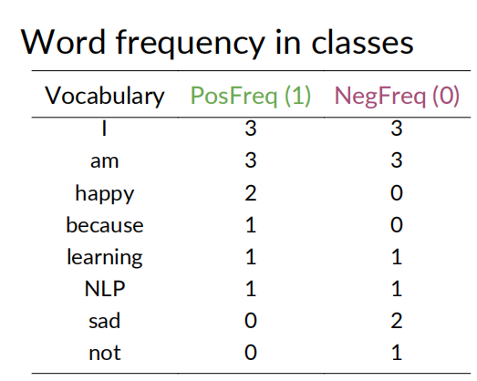
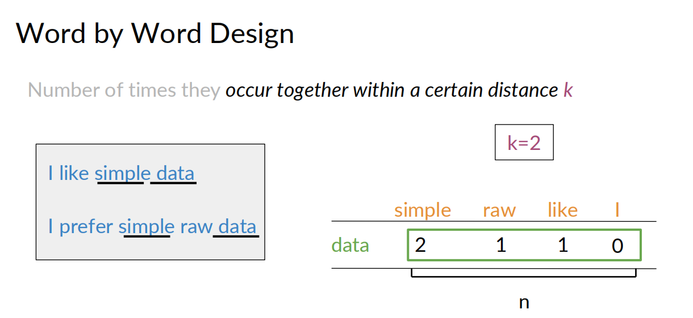
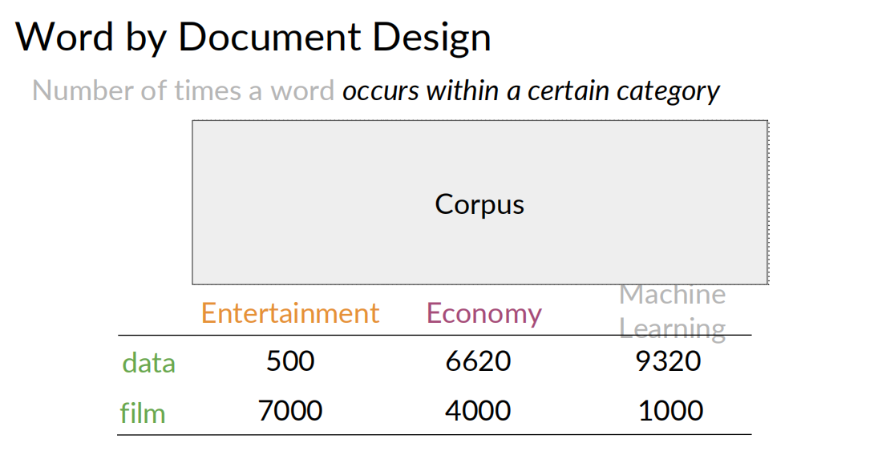
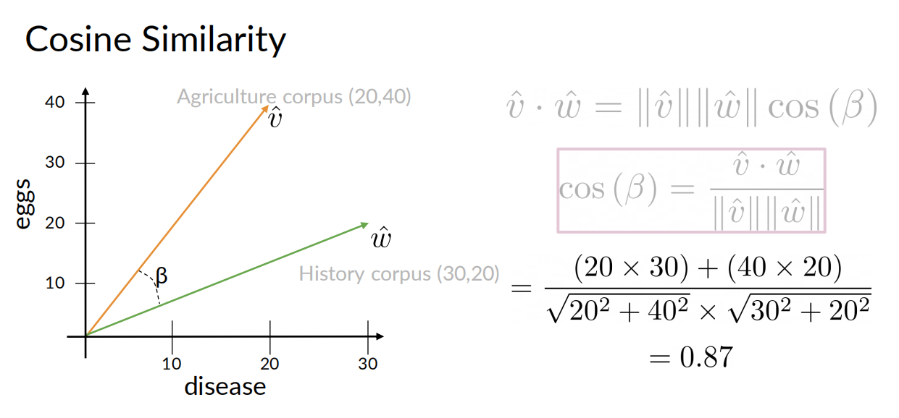
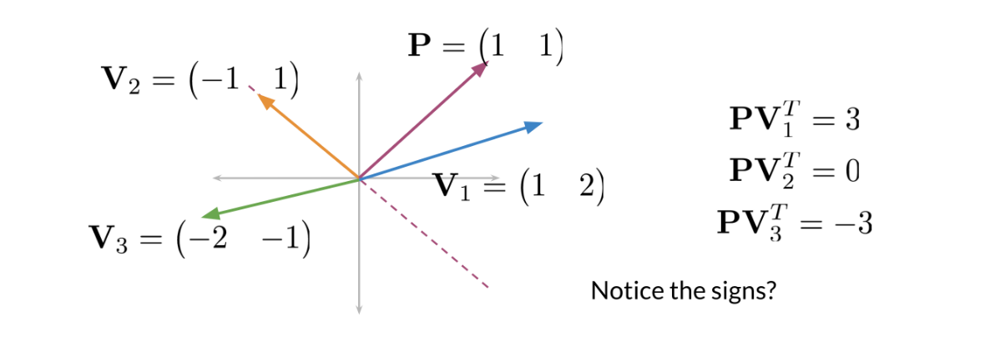

1.Classification and Vector Spaces
- Week1 分类tweets
- 预处理
- 正负数据计算
- 特征提取
- 训练
- Week2 概率 + 贝叶斯规则 {#a}
- Laplacian Smoothing
- log likelyhood
- 朴素贝叶斯的训练
- 应用场景
- Week3 词向量
- 欧式距离
- 余弦相似度
- PCA
- Week4 机器翻译
- Transforming
- KNN
- Locality sensitive hashing （位置敏感哈希）
- 近似KNN
Week1 分类tweets
个人感觉这个方法比较粗糙，准确率不高
预处理
- Removing stopwords, punctuation, handles and URLs
- Stemming
- Lowercasing
正负数据计算
把收集来的tweets语料分成两类，positive和negative
为每个单词在postive和nagative中的的次数计数， 如：

特征提取
对于一个tweet，提取3个features
$$ [Bias, Sum Pos. Freq, Sum Neg. Freq] $$
\(Bias=1\)
\(Sum Pos. Freq = \sum_{\omega } freqs(w, 1)\)
\(Sum Neg. Freq = \sum_{\omega } freqs(w, 0)\)
如，freqs[("today",1.0)] 表示today在pos的tweets中出现的次数 freqs[("today",0.0)] 表示today在neg的tweets中出现的次数
每个单词在正负样本中出现的计数的总和
每个tweet，就对应下面一个三元组
训练
训练方法就是逻辑回归(Logistic Regression)
- input: 训练集中每个tweet的所有三元组
- output: 每个tweet的标签
Week2 概率 + 贝叶斯规则 {#a}
朴素贝叶斯是在指，假设用于分类的所有特征都是互相独立没有关联的。
虽然这个假设非常的强，实际中不太可能出现，单作为简单的处理方式，还是可以的。
在一个大的语料库中，对每个单词在正负两种情感的tweet中出现的次数进行统计, 得到 \(P(w_i|pos)\) 和 \(P(w_i|neg)\)
现在的问题是，对于一个新的tweet，我们要分析它的正负情感属性。 这个新tweet中出现了这些单词，\(w_1,w_2,...,w_m\)。这相当于计算\(P(pos|(w_1,w_2,...,w_m))\)，或计算\(P(neg|(w_1,w_2,...,w_m))\)
根据贝叶斯公式，可知 $$ P(pos|(w_1,w_2,...,w_m))=\frac{P(pos)P((w_1,w_2,...,w_m)|pos)}{P(w_1,w_2,...,w_m)} $$
按朴素贝叶斯的假设 \(P((w_1,w_2,...,w_m)|pos) = P(w_1|pos)...P(w_m|pos)=\prod_{i=1}^{m}P(w_i|pos)\)
我们可以通过计算 \(P(pos|(w_1,w_2,...,w_m))\) 和 \(P(neg|(w_1,w_2,...,w_m))\) 的比值来对新 tweet进行评估，那么 $\(\frac{P(pos|(w_1,w_2,...,w_m))}{P(neg|(w_1,w_2,...,w_m))}=\frac{P(pos)\prod_{i=1}^{m}P(w_i|pos)}{P(neg)\prod_{i=1}^{m}P(w_i|neg)}=\frac{P(pos)}{P(neg)}\prod_{i=1}^{m}\frac{P(w_i|pos)}{P(w_i|neg)}\)$
如果P(pos)=P(neg)，可以约掉这两项，实际中可能它们并不相同，计算的时候就要带着这两项。
简化后，实际我们只需要计算这个的比值，将它与1进行比较 $\(\prod_{i=1}^{m}\frac{P(w_i|pos)}{P(w_i|neg)}\)$
由于某些词\(P(w_i|pos)或P(w_i|neg)\)可能为0，为了避免除以0，可以做一个Laplacian Smoothing
Laplacian Smoothing
\(N_{class}\)=frequency of all words in class
\(V_{class}\)= number of unique words in class
拉普拉斯变换之后，就不会有除以0的情况了
log likelyhood
P(pos) 和 P(neg) 也称为先验概率。 以下是完整的朴素贝叶斯二分类公式 $\(\frac{P(pos)}{P(neg)}\prod_{i=1}^{m}\frac{P(w_i|pos)}{P(w_i|neg)}\)$
为了避免运算过程中的精度问题，将上面的公式改为log形式 $\(log(\frac{P(pos)}{P(neg)}\prod_{i=1}^{m}\frac{P(w_i|pos)}{P(w_i|neg)})=log(\frac{P(pos)}{P(neg)})+log(\prod_{i=1}^{m}\frac{P(w_i|pos)}{P(w_i|neg)})=log(\frac{P(pos)}{P(neg)})+\sum_{i=1}^{m}log(\frac{P(w_i|pos)}{P(w_i|neg)} )\)$
判断准则是，以上公式的值是否大于0，大于0为正属性，小于0为负属性
朴素贝叶斯的训练
- 收集标注语料库
- 预处理
- lowercase
- Remove punctuation, urls, names
- Remove stop words
- Stemming
- Tokenize sentence
- 计数，每个词统计在正负样本中的次数
- 计算 \(P(w|class)\)
- 计算 \(\lambda(w)=log(\frac{P(w|pos)}{P(w|neg)})\)
- 计算 \(logprior=log(\frac{P(pos)}{P(neg)})\)
应用场景
- Sentiment analysis
- Author identification
- Information retrieval
- Word disambiguation
- Simple, fast and robust!
Week3 词向量
两种方式构建词向量 - word by word - 在语料中，统计某个词周围距离<k的词的计数，维度是所有单词的个数

- word by doc - 在语料中，统计某个词在某类语料中出现的计数，维度是所有分类的个数
用词向量空间描述两个词的关系
欧式距离
用于衡量两个向量之间的距离
不足：当向量的长度差异很大时，欧式距离不是很准确（语料集的大小差异很大）
余弦相似度

衡量两个向量在方向上的相似度
可以用此方式预测一个关系
PCA
词向量往往是高维向量，PCA是一种降维简化的方法 PCA算法有单独介绍的章节
Week4 机器翻译
Transforming
语言A翻译为语言B，需要计算出两种语言的所有词的词向量 将A的一个词翻译成B的一个词，就是找到一个词向量的映射关系，这可以通过一个转换矩阵\(R\)表示。而转换过程就是向量和矩阵的乘法 \(XR=Y\) 。现在的问题就是如何找到转换矩阵\(R\)。
实际上，这就是一个机器学习的过程，用一些已有的X和Y的对应关系，学习到一个最为解决的矩阵R。
$$ \begin{align*} initialize\ R \ in\ a\ loop&: \ &Loss=||XR-Y||_F=\frac{2}{m}(X^T(XR-Y)) \ &g=\frac{d}{dR}Loss \ &R=R-\alpha g
\end{align*} $$
用这种方法得到了R之后，就可以用R来预测测试集中的其他向量了，但这有个问题，XR得到得向量Y，不一定是语言B中对应任何单词，这时就需要在语言B中找一个与Y最接近得单词作为预测值。这就需要用到KNN。
KNN
在一个向量空间中找一个与目标最接近的向量。
在整个B语言的空间中寻找，是个效率很低的实现，可以考虑将大的向量空间，按类型分成若干个小的向量空间，在每个小向量空间中查找的性能就要高很多。
可以使用hash函数将每个向量分配到一个子空间中。
如何划分子空间呢? 先了解一下位置敏感哈希的概念
Locality sensitive hashing （位置敏感哈希）
Locality sensitive hashing is a technique that allows you to hash similar inputs into the same buckets with high probability.
一些点，如何用一个平面将它们分开，使得不同的点被分隔在平面的两侧，相当于找到一个Hash函数，将这些点分类。
一个平面
对于二维平面的点，每个点看作从原点的一个向量，考虑如何找到一条过原点的直线（下图的虚线），如何将这些向量分在这条直线两侧，先找到它的一个法向量P

这里使用的是 向量的内积，数学上点乘，就是
\(\vec{a} \cdot \vec{b} = |a||b|cos\theta\)
具有性质
1. 表征或计算两个向量之间的夹角：同向是正，反向是负，垂直为0
2. b向量在a向量方向上的投影*|a|
(\(\vec{a} \cdot \vec{b} = |a||b|cos\theta=|a|p,p为b在a上的投影\))
这样通过判断向量Vi与P的内积就可以直到Vi是在哪个分类中。
多个平面
如果要用多个平面将这些点分割在多个子区域内 可以根据V与P的内积值的正负号，决定V在这个平面的Hash值Hi 将所有Hi加和，计算总的Hash值 $\(h = \sum_{i=1}^{n} 2^i *h_i (其中 h_i=\begin{cases} 1 当 sign(\vec{a} \cdot \vec{b}) > 0\\ 0 其他 \end{cases} )\)$
近似KNN
由于在整个向量空间中求KNN计数量是非常大的，为了折中，可以考虑在一个范围内计算一个近似的KNN。那如何找近似空间呢？ 可以多次执行下面的算法 - 随机选择一组平面，把与目标点在一个子空间范围的点都最为目标点的近似 - 将这些点放入候选项之中
多次执行之后，在所有候选点中找一个与目标点最近的，作为近似KNN的最终答案。